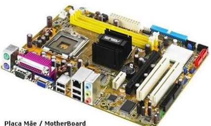
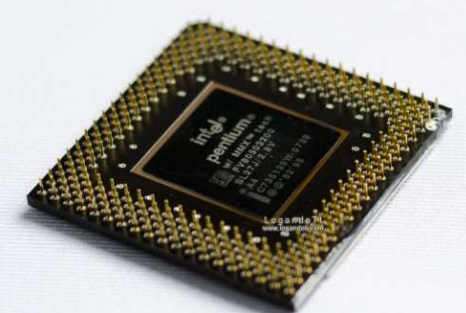
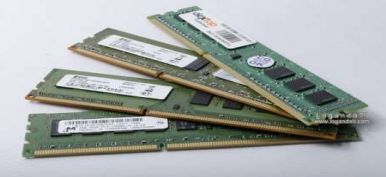
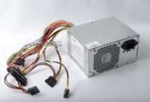
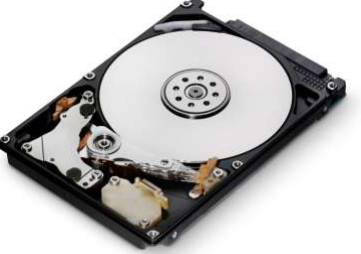
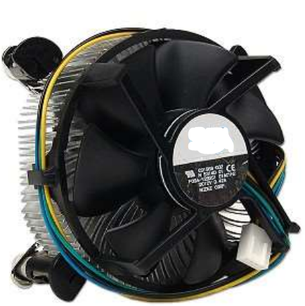

"COMPONETES DE COMPUTADOR"

Os computadores veio tomando a casa da população mundial , com grande avanço da tecnologia 92% da população mundial tem um computador ou notebook em suas casas vamos fala um pouco de cada componente e explica suas função para o uso do computador , cada componente desses é importante um interliga o outro.
o tema que sera abordado são:
- Placa Mãe
- Processador
- Memoria Ram
- Fonte de Energia
- HD
- Cooler
PLACA MÃE placa-mãe é o principal componente de um computador, pois ela é responsável por interligar todos os outros componentes internos do computador por meio de slots de expansão (PCI, PCI-X, AGP e etc) e portas / interfaces de comunicação (PS2, SATA, IDE, Serial, Paralela, USB, eSATA e etc). Para permitir a comunicação dos slots de expansão e interfaces citados acima, as placas-mãe possuem chipset controladores, os quais são responsáveis por permitir a comunicação entre os dispositivos conectados a placa-mãe, como o processador e a memória.

PROCESSADOR O processador, também chamado de CPU é o componente de hardware responsável por processar dados e transformar em informação Ele também transmite estas informações para a placa mãe, que por sua vez as transmite para onde é necessário (como o monitor, impressora outros dispositivos). A velocidade do processador, medida em Mhz (mega-hertz) ou Ghz (giga-hertz) define a capacidade de processamento do mesmo.

MEMÓRIA RAM A memória RAM é conhecida como memória de armazenamento volátil, pois mantém dados quando energizada (ligada), mas os perde quando deixa de ser energizada (desligada). Ela tem a função de armazenar dados utilizados durante a operação do sistema operacional e de algum software específico. A quantidade de memória RAM pode interferir diretamente no desempenho de um computador, porém ela sozinha não é responsável pela velocidade do micro. Quando se tem menos memória RAM do que o recomendado para rodar um sistema operacional ou outro aplicativo, a memória RAM fica cheia fazendo com que ela seja limpa para a armazenagem de novos dados, porém a memória sempre será requisitada, e o ciclo de limpeza e gravação de dados se repete, causando lentidão no sistema.

FONTE DE ENERGIA Responsável por alimentar todo o sistema, como pla camãe , processador, memória, dispositivos instalados em slots de expansão (AGP, PCI, PCI-X), drives ópticos (CD, DVD , BlueRay e etc)

HD (HARD-DISK / DISCO RÍGIDO)O HD é responsável pelo armazenamento de dados no computador, trata-se de um componente que possui internamente um disco magnético parecido com um CD ou DVD. A capacidade de um HD é medida em KB (kilobytes) e escalas derivadas (MB, GB, TB, e etc). Hoje em dia a escala mais popular é o GB (Gigabytes) e os discos mais populares possuem tamanhos de 80GB, 160GB, 200GB, 250GB, 320GB, 500GB, 640GB e assim por diante. Obviamente, quanto maior a capacidade de armazenamento, mais dados, ou arquivos caberão no HD. O desempenho de um HD é medido em mbps, ou megabytes por segundo onde quanto maior a velocidade de gravação e leitura, melhor o desempenho do HD.

COOLER São pequenos ventiladores responsáveis pela refrigeração dos componentes do computador Eles são fundamentais, tendo em vista que sem eles os componentes podem super-aquecer e queimar. O mais comum e mais barato dos sistemas de refrigeração é o cooler à base de ar. Ele é composto por um dissipador — peça de cobre ou alumínio que faz contato com o processador — e um ventilador que gira constantemente para remover o calor excessivo da CPU.

Veja Tambem sobre;